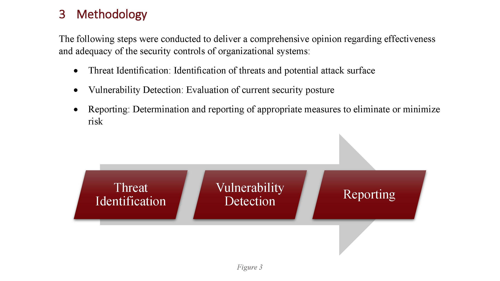
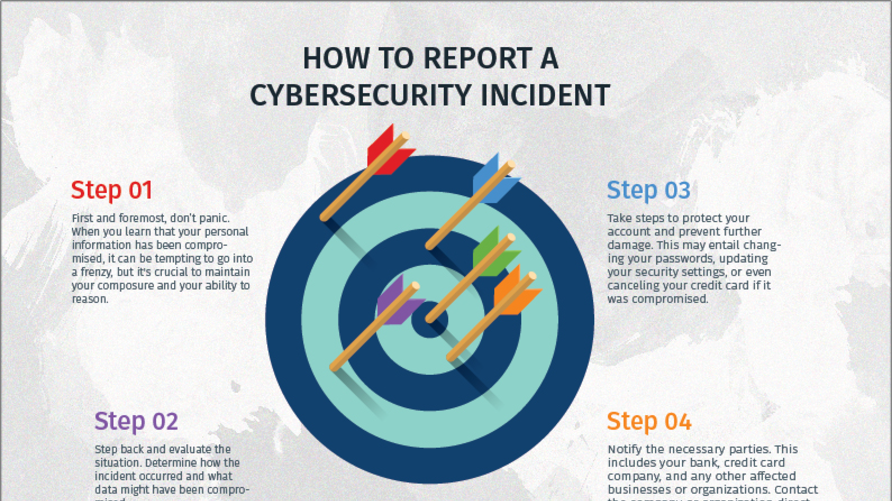

I'm an insatiable philomath who thrives at the intersection of cybersecurity, automation, and creative problem-solving. My expertise spans penetration testing, web security, scripting, and UI/UX tooling.
My philosophy? Knowledge is power—but applied knowledge is transformation. Without application, knowledge is wasted potential.
As an active competitor in cybersecurity, I've ranked in the top 6% nationally in the National Cyber League, leading high-performing teams and developing resources to streamline cybersecurity training. My work also extends to cybersecurity education, including internet safety presentations, ethical hacking research, and technical writing on security concepts.
With hands-on experience in Bash scripting, automation, front-end web development, and AI tools, I develop custom utilities and automation scripts that improve accessibility and simplify complex processes for cybersecurity professionals and everyday users alike. A relentless problem-solver and independent thinker, I continuously refine my skills through research, competitive challenges, and self-directed learning.
My goal is clear: to bridge the gap between usability and security, transform complexity into resilience, and drive high-impact solutions through innovation and continuous improvement.
I am a cybersecurity student with a focus on penetration testing, network defense, and incident response. I have hands-on experience with tools like Kali Linux, Nmap, Metasploit, and Wireshark, gained through academic labs and National Cyber League competitions. My practical skills include vulnerability scanning, web exploitation, and threat analysis, supported by foundational knowledge of Bash scripting and operating systems.
Kali Linux
Advanced
Bash
Advanced
Nmap
Advanced
Wireshark
Intermediate
Knowledge Areas
I have practical experience in key cybersecurity domains, including cryptography, log analysis, enumeration, and exploitation, acquired through coursework, labs, and competitions. My skills span network traffic analysis, web application security, and digital forensics, allowing me to identify vulnerabilities and secure systems effectively. I continue to refine these areas through hands-on projects and continuous learning.
AI & Automation
Cryptography
Log Analysis
Network Traffic Analysis
Password Cracking
Scanning & Reconnaissance
REST API
Phishing
Metasploit
Git/GitHub/GitLab
OSINT
Prompt Engineering
General Skills
I have practical knowledge in vulnerability assessments, penetration testing, and incident response. My hands-on work includes conducting scans, identifying risks, and applying remediation strategies. I am experienced in reconnaissance, exploitation, and crafting incident response plans, and I continuously improve these skills through competitions and academic projects.
Vulnerability Assessments | Advanced
Penetration Testing | Advanced
Prompt Engineering | Intermediate
Experience
Cybersecurity Experience
Hands-on cybersecurity experience through leadership roles, academic projects, and freelance work. Demonstrated expertise in penetration testing, vulnerability assessments, and incident response.
Conducted vulnerability assessments for web applications and networks, targeting common issues like XSS, SQLi, and misconfigurations. Used Nmap and Wireshark for network scans to identify open ports and potential attack vectors. Created security awareness guides for small businesses on phishing prevention, password security, and MFA.
National Cyber League
Team Captain
Oct 2022 - Apr 2024
Led a high-performing cybersecurity team in National Cyber League, ranking in the top 100 nationally. Specialized in Web Application Exploitation, Network Traffic Analysis, and Password Cracking, achieving top percentile scores. Managed reconnaissance, vulnerability exploitation, and post-game reporting. Received multiple NCL Challenge Coins for consistent top 500 national individual performance.
Developed an Enterprise Security Management Plan covering incident response, disaster recovery, and business continuity. Created an Incident Response Plan per NIST SP 800-61, outlining containment, eradication, and post-incident steps. Conducted vulnerability assessments with tools like Wireshark, Nmap, and Metasploit.
Education
Academic Excellence
A well-rounded education in Information Technology with a focus on Cybersecurity, supported by hands-on experience through academic projects and certifications.
Oklahoma State University Institute of Technology
Bachelor of Technology
Expected May 2026
Currently pursuing a BTech in Information Technology with a focus on Cyber Incident Response.
Okla. City Community Col.
Associate of Applied Scien.
May 2023
Earned an AAS in Computer Science with a focus on Cyber/Info Security. Graduated with a 3.951 GPA and Academic Honors. Active member of the Cyber Club and involved in various academic projects focused on cybersecurity.
Honors & Awards
President's Honor Roll: secured a 4.0 GPA
Certificate of Achievement: exceptional scholarship
Presentation Award: Scholarship from Dean of CS
Okla. City Community Col.
Certificate of Mastery
May 2023
Earned a Certificate of Mastery Degree in Computer Networking Support with a 4.0 GPA. The program focused on Network Configuration, Network Security, and Troubleshooting.
Okla. City Community Col.
Certificate of Mastery
Dec 2022
Earned a Certificate of Mastery Degree in Computer Systems Support with a 4.0 GPA. Focused on Hardware Installation, Maintenance, and Technical Support.
Portfolio
Publications
A curated selection of technical projects, tools, and cybersecurity-focused publications that highlight my practical experience in vulnerability assessments, penetration testing, and security education.
Event: Organized by Putnam City Foundation & OCCC Department of Community Outreach and Education
Date: January 26, 2023, Overholser Elementary School
Delivered an interactive presentation to 75 parents, covering cybersecurity basics, the role of social media in security, and practical tips and resources for keeping children safe online. Highlighted the risks associated with public Wi-Fi, online posting, and password storage, and emphasized the importance of identifying and reporting cyber incidents such as cyber-attacks and cyberbullying.
Incident Response, Disaster Recovery, and Business Continuity Plan

Information Security Audit
Cybersecurity Assessment and Recommendations

Cybersecurity Awareness Booklets
Community Education Resources
Rogue.sh
Penetration Testing Automation Tool
"Rogue" is a script that automates the pentesting process on Kali Linux. Written in Bash and Ruby, it scans target machines for vulnerabilities using Nmap, sets up the Metasploit environment, exploits vulnerabilities, gathers information, and escalates privileges. The script also downloads sensitive files and cracks credentials using John the Ripper. The roadmap for development followed industry standards like PTES and referenced multiple penetration testing guides.
An all-in-one web interface for C++ programming that includes a built-in C++ IDE and quiz feature. It is designed to provide a convenient way for students and beginners to learn and test their knowledge in C++. The IDE is integrated with the quiz feature to help users practice what they have learned.
Collaborated with the World Anvil Development Team to create comprehensive API documentation for the World Anvil Public API using Swagger/OpenAPI standards. This documentation enables developers to integrate with the World Anvil platform, providing endpoints for creating, retrieving, updating, and deleting worldbuilding content.
Incident Response, Disaster Recovery, and Business Continuity Plan
Developed a comprehensive Enterprise Security Management Plan for ACME Corp, a fictional federal contractor managing multi-platform information systems across U.S. and EU government agencies. The plan was designed to mitigate cybersecurity threats and ensure operational resilience during disruptions by integrating an Incident Response Plan (IRP), Disaster Recovery Plan (DRP), and Business Continuity Plan (BCP). The project followed best practices outlined in NIST SP 800-61 and NIST SP 800-34, providing a structured approach to maintaining business operations in the face of cyber incidents and natural disasters.
The Incident Response Plan outlined detection, containment, eradication, and post-incident activities to address potential security breaches and limit damage to the organization. The Disaster Recovery Plan included strategies for restoring critical systems using offsite backups, redundant systems, and failover protocols to minimize downtime. Additionally, the Business Continuity Plan provided detailed risk assessments and business impact analyses to prioritize essential operations and ensure continuous service delivery during emergencies.
The project deliverables included a comprehensive plan document with appendices covering incident scenarios, team contact lists, system validation tests, and hardware/software inventories. This plan demonstrated proficiency in applying enterprise security management practices and implementing cybersecurity frameworks to protect organizational assets and ensure operational continuity.
Conducted an Information Security Audit for an institution to evaluate its physical, logical, and application-level security controls. The audit followed a comprehensive methodology to identify vulnerabilities and recommend actionable mitigations. The project was completed in collaboration with a team, adhering to industry best practices such as NIST Cybersecurity Framework (CSF) and ISACA's IT Assurance Framework (ITAF).
The assessment identified potential attack vectors across physical security, network configuration, and publicly accessible systems. Specific findings included the need for stronger access controls, network segmentation, and security headers on public-facing websites. Using a combination of manual analysis and open-source tools, the audit highlighted areas for improvement in incident response planning, firewall configuration, and employee awareness of social engineering risks.
The final report provided practical recommendations for enhancing the institution's security posture, including implementing a Web Application Firewall (WAF), improving password policies, and securing administrative interfaces. The project demonstrated proficiency in OSINT techniques, vulnerability detection, and security documentation.
Authored two Cybersecurity Awareness Booklets, designed to educate non-technical users about online safety, privacy protection, and cyber hygiene best practices. These booklets were distributed to students and staff at Oklahoma City Community College and are still being used by the Computer Science Department to promote cybersecurity awareness.
The 2021 edition provided a beginner-friendly introduction to cybersecurity concepts such as using strong passwords, enabling multi-factor authentication, and avoiding phishing scams. The 2022 edition, created for Cybersecurity Awareness Month, aligned with the Cybersecurity and Infrastructure Security Agency's (CISA) campaign, expanding on topics like ransomware prevention, safe public Wi-Fi usage, and incident reporting.
These booklets included step-by-step guides, infographics, and resource links to help individuals take actionable steps to secure their digital lives. The project demonstrated proficiency in technical writing, public communication, and cybersecurity education, and it was recognized by the institution for its positive impact on community awareness.